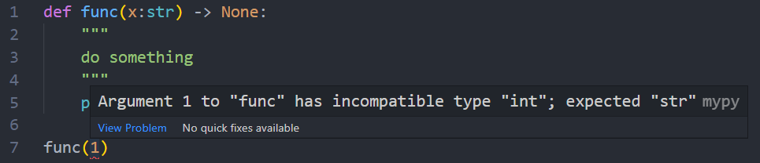

Type hinting is a formal solution to statically indicate the type of a value within your Python code. It was specified in PEP 484 and introduced in Python 3.5.
Credit: RealPython
Basically, It allows you to put the static type into Python code like Java , Typescript , etc.
def add(x):
return x+1
print(add(1))
def add(x:float)->float:
return x+1
print(add(1))
IDE can understand your code better.
class Candy:
def __init__(self, color) -> None:
self.color = color
def are_two_candies_same_color(candy1, candy2):
return candy1.color == candy2.color
red_candy = Candy("red")
blue_candy = Candy("blue")
print(are_two_candies_same_color(red_candy, blue_candy))
class Candy:
color:str
def __init__(self, color:str) -> None:
self.color = color
def are_two_candies_same_color(candy1:Candy, candy2:Candy) -> bool:
return candy1.color == candy2.color
red_candy = Candy("red")
blue_candy = Candy("blue")
print(are_two_candies_same_color(red_candy,blue_candy))
Learning curve
Actually, Python does not do anything about type checking.
def func(x:str) -> None:
"""
do something
"""
print(x)
func(1)
output:
1
However, You can install mypy and your IDE will be able to check your type before running the code.
